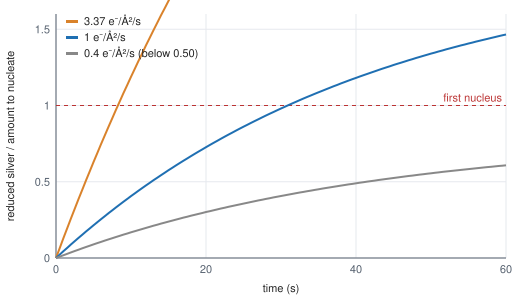
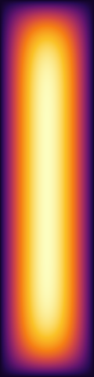
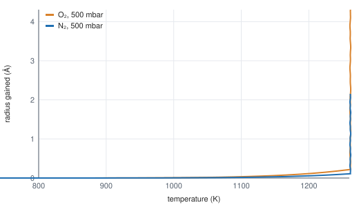
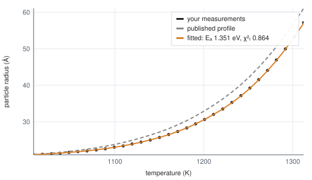

Standard operating procedure SOP-05In situ microscopy
In situ experiments
Plan and run liquid, gas, heating and biasing experiments: set up the cell within its safe margins, choose the dose rate against radiolysis, design a timeline, record a movie with its measurements, and calibrate the kinetics to your own data so the simulator becomes a digital twin of your instrument.

SOP-05, version 1.0, November 2026 For users planning in situ sessions, and for teaching in situ methods Simulation only: nothing here controls a real microscope or holder
Seeing with ElectronsTEM-view · Advanced-EM
SOP-05 In situ experimentsScope and overview
Scope and overview
In situ microscopy watches a specimen change while its environment is controlled: a liquid between two membranes, a gas at the specimen, a heating chip, or a voltage across electrodes. The holders here are generic and described by their parameters (window material and size, spacer, gas path, electrode gap), not by product.
Environment
Set in
Watch for
Liquid cell
Cell around the specimen → Liquid cell
Window bulge and burst margin; radiolysis (H₂, pH, bubbles); nucleation and growth
Gas cell / ETEM
Cell around the specimen → Gas cell / ETEM
Scattering by the gas (contrast loss); reactions; coarsening
Heating
Specimen holder → heating chip
Thermal drift; onset temperatures; the chip runs ~1 % hot
Check the burst pressure before raising the pressure difference across liquid-cell windows. A burst window puts liquid in the column; the exhibit blanks the beam.
The electron beam is a reactant in liquid: every dose rate is also a radiation chemistry experiment.
Every kinetic parameter carries a label: literature, calibrated (fitted to a named dataset) or trend (a placeholder reproducing a published trend). Plan with trend values; do not report them as predictions.
On a real instrument, follow the holder manufacturer's limits and your facility's procedures; they take precedence over anything here.
Seeing with Electrons · TEM-view2
SOP-05 In situ experimentsStep 1 of 7
Step 1
Set up the cell within its margins
In The specimen, choose the specimen, then under Cell around the specimen choose Liquid cell or Gas cell / ETEM.
Liquid. Choose the cell class (SiNₓ static, SiNₓ flow, graphene pockets), the window size (Window short side, Window long side), the Spacer, and the Pressure difference. The window map in the side panel (Fig. 1) shows the liquid thickness across the window and where the stage is; the note gives the bulge at the centre, the stress and the burst pressure.
Move the stage towards a window corner: the liquid thins, and the image improves. Stay on the window: on the frame there is no image.
Gas. Choose the geometry (windowed cell, or the open pole-piece gap), the gas and the Pressure at the specimen. The note gives the electrons lost to the gas.
Heating. Choose the heating holder and a Temperature setpoint; watch the drift readout settle after each step.
Biasing. Set the electrode layout and gap, the source and waveform, and the Compliance; the I–V plot and the breakdown field appear under the controls.
Result. The note reports a burst margin above 2 (pressure difference well under the burst pressure), liquid of the thickness you planned at the stage position, and an image through the cell.
Caution. A 50 × 200 µm, 20 nm SiNₓ window at 1 bar bows 1.6 µm at its centre and bursts at about 6 bar. Larger windows bow more and burst sooner.

Fig. 1. Liquid thickness across a 50 × 200 µm window at 1 bar (200 nm spacer): thinnest at the edges, 3.3 µm at the centre.
Seeing with Electrons · TEM-view3
SOP-05 In situ experimentsStep 2 of 7
Step 2
Choose the dose rate
Set the Dose rate (liquid cell). The note gives the radiolysis products at the beam (hydrated electrons, H₂, H₂O₂, pH) and whether H₂ is above saturation (bubbles).
With Metal precursor in the liquid on, choose the precursor. The beam reduces the metal; when enough has accumulated, the first nucleus forms (Fig. 2).
Find the threshold dose rate in the note: below it nothing nucleates however long you wait. Above it, the time to the first nucleus falls as the dose rate rises, while the dose to nucleation stays about the same.
For imaging without reaction, stay below the threshold. For a nucleation study, choose a rate above it and plan the movie to start before the induction time.
Result. Silver from 1 mM AgNO₃ in 800 nm of liquid at 200 kV: threshold 0.5 e⁻/Ų/s; at 3.37 e⁻/Ų/s the first nucleus appears after ~8.5 s (~29 e⁻/Ų). Both are calibrated to a published liquid-cell series.
Note. A gas or a heated specimen has no radiolysis, but the beam still heats, charges and damages beam-sensitive materials; the dose readout under the image applies there too.
Fig. 2. Reduced silver, as a fraction of what it takes to nucleate, at three dose rates. Below the threshold it levels off short of 1.
Seeing with Electrons · TEM-view4
SOP-05 In situ experimentsSteps 3 and 4 of 7
Step 3
Design the experiment and its timeline
Turn on In situ experiment (TEM, STEM or diffraction). The designer opens.
Under Start from, pick a worked design (E1–E9: radiolysis, gold growth, sintering in O₂ or N₂, gas contrast, redox cycling, helium bubbles on annealing, a biased gap, electrochemistry, silver nucleation), or keep your own settings.
Write the Experiment name and The question it answers.
Add ramps to the Timeline (from the movie's start) with Add ramp: a quantity (temperature, dose rate, pressure, voltage), its target and the start and end times.
Set the Movie length and Frames per second. Under Measure each frame, choose what to record (radius, H₂, pH, nucleation, current…).
Check the estimate in Data, dose and compute: the data volume and dose of the whole movie.
Step 4
Record the movie and its measurements
Select Record movie. Frames are recorded with drift and the timeline running; the observables plot fills as it goes.
Stop ends early; Discard movie clears it.
Save the design with Save session. The session carries the settings, the timeline and the calibration profile, so the experiment reopens exactly.
Read the movie note: events (first bubble, nucleation, onset) are listed with their times.
Result. A movie and a table of measurements per frame, with the events and the total dose.
Seeing with Electrons · TEM-view5
SOP-05 In situ experimentsSteps 5 and 6 of 7
Step 5
Read the kinetics and their labels
Each process in the notes carries its label: calibrated (fitted to a named published series), partly, literature or trend.
Under Kinetics calibrated to, compare Published in situ series (default) with Nothing: the uncalibrated defaults, and watch the onset move.
Result. Gold on a heating chip coarsens from ~1145 K in O₂ and ~1205 K in N₂ (Fig. 3). The thermal rate is calibrated to a published series; the oxygen factor is still a trend.

Fig. 3. Radius gained on a ramp to 1250 K in 500 mbar O₂ and N₂.
Step 6
Calibrate to your own data
Set up the experiment as you ran it (step 1–3), then Template CSV: the columns that apply, sampled from the model.
Replace the values with your measurements: t_s is required; T_K, lcRate, gcP and bsV drive the model when present; <column>_sd gives σ per point.
Fit my series…; name the Parameters to fit or leave it empty for the suggestions. Aim for at least 3 points per parameter.
Check the plot and reduced χ² (Fig. 4), then Save my profile. The kinetics run as Mine, and the profile saves with the session.
Result. A profile fitted to your instrument: here Eₐ 1.351 eV (true 1.35) and reduced χ² 0.86.

Fig. 4. A measured series (dots), the published profile (dashed) and the fit to your data.
Seeing with Electrons · TEM-view6
SOP-05 In situ experimentsStep 7 of 7, troubleshooting
Step 7
Export, and process on a cluster
Export the movie data, or the HPC bundle from Data, dose and compute, for drift correction and full-scale processing (SOP HPC-09, an in situ campaign).
Headless: node tools/calibrate/calibrate.mjs --session my-session.json --series my-series.csv --out my-calibration.json fits the same series without the browser.
Troubleshooting
Symptom
Likely cause
Action
“Window burst · beam blanked”
Pressure difference above the burst pressure
Load a new cell; smaller window, thicker membrane, lower ΔP
No image, “on the frame”
Stage outside the window
Move back onto the window (the ring in the window map)
Image washed out in liquid
Liquid too thick at the centre
Work near the window edge; smaller spacer or ΔP; energy filter
Bubbles appear early
H₂ above saturation (dose rate, static cell)
Lower the dose rate; flow
Nothing nucleates
Below the threshold dose rate
Raise the dose rate above the threshold in the note
Contrast lost in gas
Pressure × path too large
Lower pressure, shorter gas gap, windowed cell
Biased gap fails
Field above breakdown, or no compliance
Set compliance; lower the voltage; Load a new chip
Keep the plan (movie length, frame rate, detector, dose rate) and the timeline from the design, and check the estimator's data volume and dose before booking time.
Silver nucleation and gold coarsening are calibrated to published series. The other rates follow published trends: use them to plan, not to predict values.
After the run, fit your measured series (step 6); the next design then runs on your instrument's numbers.
Seeing with Electrons · TEM-view8
Open the in situ designer
The link opens TEM-view in TEM. Turn on In situ experiment and choose a design under Start from.
TEM-view in TEM
A computer is best: movies are recorded in the browser.
Designs and calibration
tools/insitu/EXPERIMENTS.md (E1–E9) and tools/calibrate/README.md in the repository.
Related procedures
SOP-01 TEM alignment. HPC-09 an in situ campaign on a cluster.
Calibration data
Silver nucleation and gold coarsening, each fitted to a published in situ series; the datasets are named in the exhibit.
SOP-05 In situ experiments, version 1.0, November 2026 Simulation only. Nothing here controls a real microscope or holder. Results from the simulator are not measurements of a real specimen.